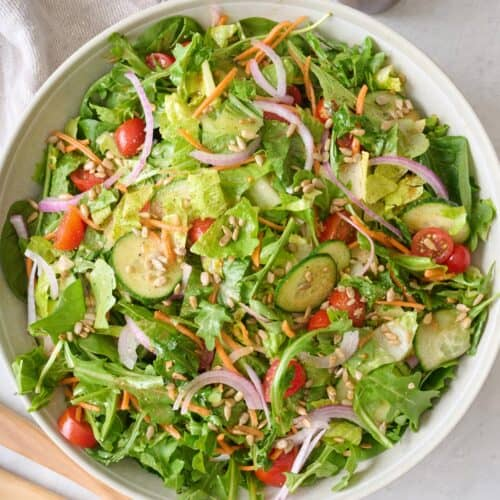

Salad
Prep: 10 mins
Difficulty: Easy
Serves: 2

Ingredients
- 2 cups mixed salad greens (lettuce, spinach, arugula)
- 1 cucumber, sliced
- 1 cup cherry tomatoes, halved
- ½ red onion, thinly sliced
- 1 carrot, grated
- ½ cup croutons
- 3 tablespoons olive oil
- 2 tablespoons lemon juice
- 1 teaspoon honey
- Salt and pepper to taste
Instructions
- Wash and dry all the vegetables thoroughly.
- In a large salad bowl, combine the mixed greens, cucumber, cherry tomatoes, red onion, and grated carrot.
- In a small bowl, whisk together the olive oil, lemon juice, honey, salt, and pepper to make the dressing.
- Pour the dressing over the salad and toss gently to coat everything evenly.
- Top with croutons just before serving to keep them crunchy.
- Serve immediately as a starter or a light main course.
Back to Home